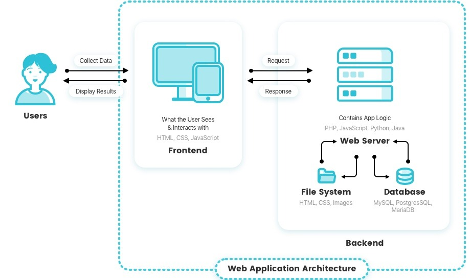

Defining Web Applications
Web apps are programs you interact with through your browser—think of tools like Gmail or Trello. They're hosted online and handle logic on the server.
Image sourced from https://reinvently.com/blog/fundamentals-web-application-architecture/

Image created through DALL-E AI
Where Databases Come In
Behind the scenes, web apps talk to databases—storing user data, retrieving product info, or saving chat messages. Without databases, apps wouldn’t remember anything!

Image sourced from https://docs.oracle.com/cd/B28359_01/server.111/b28310/ds_concepts001.htm#ADMIN12075

Image generated through DALL-E AI
Intranet vs Internet Apps
- Intranet: Internal tools—like HR platforms or dashboards—limited to company users.
- Internet: Public apps like Instagram or Amazon that serve millions globally.